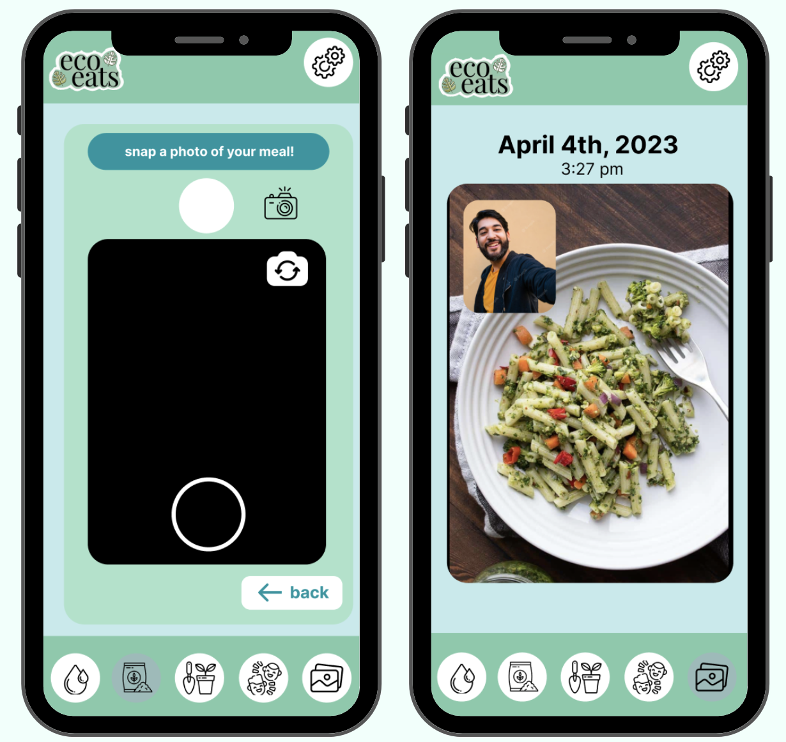
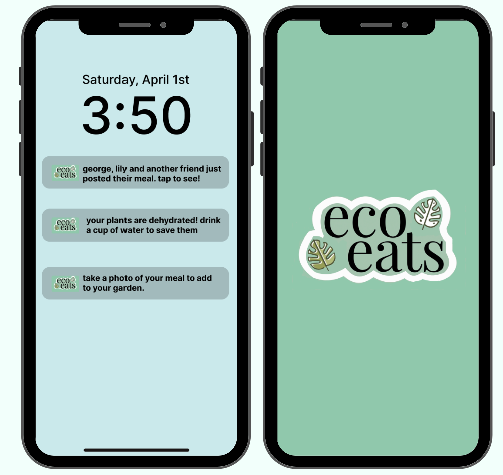
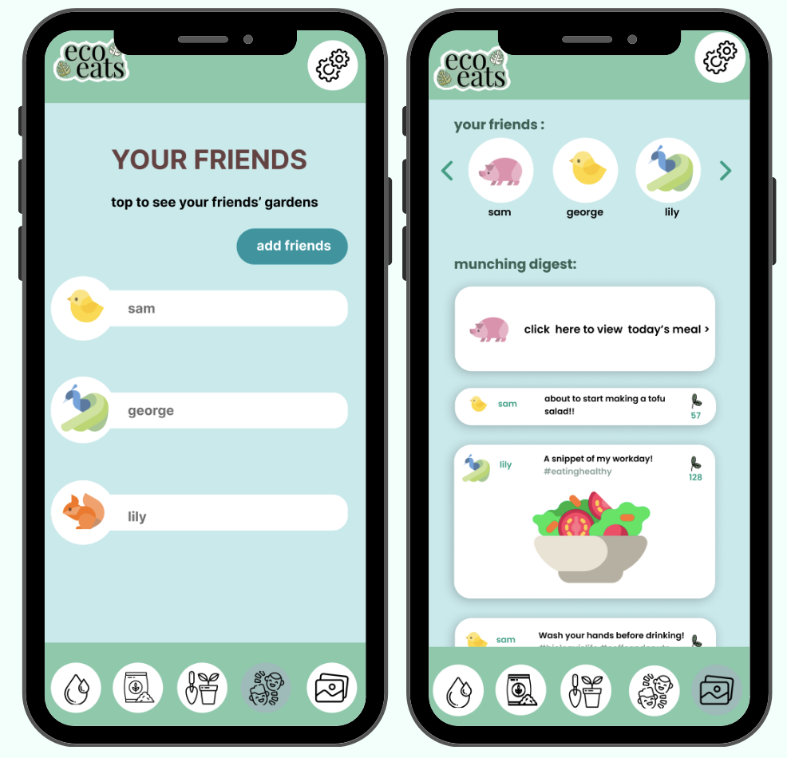
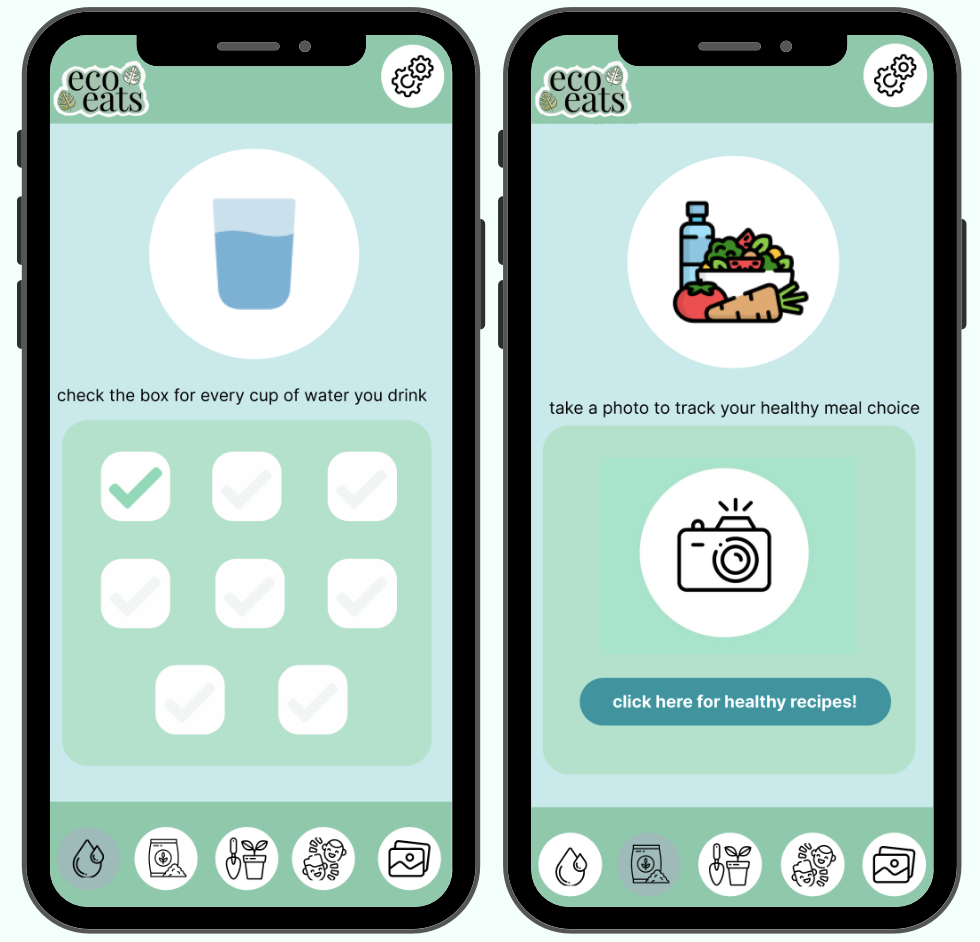
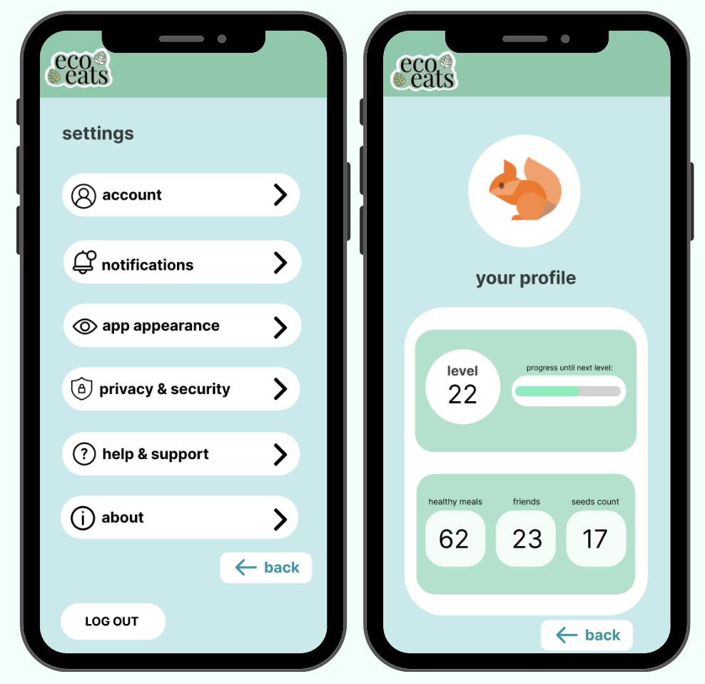

EcoEats is a web app that gamifies healthy eating and hydration by allowing users to create a virtual garden based on their daily intake and compete with friends. The app also suggests healthy meal recipes to promote wellness.
My role - Visual Design, Illustration
Duration - 5 Hours, April 2023
The team - Maithily Kadam, Isabella Rossi, Heeya Shah
Objective:
"Design a mobile app, web app, or tool that uses gamification and incentives to promote positive social change."
Based on the prompt, we identified obesity as one of the major issues that North Americans are currently facing. To tackle this problem, EcoEats was developed to transform the conventional food tracking app into a user-friendly interface that provides an engaging and competitive experience for its users.
Considering the nature of the designathon, our team was given a time constraint of five hours to create a mobile app mockup with a minimum of 20 screens, which left limited room for in-depth user research. Nonetheless, we made the best use of the given timeframe by conducting a review of other food tracking apps and incorporating relevant feedback received from them into our own app design.
In addition, we leveraged the knowledge of our peers who enjoyed using the app BeReal, and incorporated a similar feature into EcoEats to enhance user engagement. As a result, we introduced a "BeReal" notification for tracking meals in the app, which added a fun and interactive element to the user experience.
01. Brainstorming
Our team was motivated by the objective of devising a new and inventive solution that aligns with the prompt of promoting positive social change. Through our collective brainstorming and ideation efforts, we integrated various components, including the BeReal feature (as mentioned earlier) and the garden growing concept, to create a cohesive concept.
02. Design Components
Following the finalization of our concept, we conducted a thorough analysis of the user experience, with a focus on how users would feel while navigating through the app. Based on this analysis, we decided to incorporate a color scheme of greens and blues to evoke a sense of nature and tranquility associated with gardening, along with rounded edges to create a softer, more approachable display. Additionally, cartoon icons were included in order to tap into the user's childhood memories, thereby making the experience more engaging and enjoyable.
03. Putting it Together
Taking into account all of the components identified in the UX design process, we proceeded with the development of a functional prototype. The prototype encompasses a log in or sign up screen that determines the subsequent sequence of screens, which guide the user through the app's functionality. Following the completion of all screens, we focused on implementing interactions to bring the prototype to life, culminating in a comprehensive user interface design.
Login/Sign Up
Upon downloading EcoEats, users can create an account by providing their personal information or log in to an existing account. By creating an account, users can access features such as creating a virtual garden, competing with friends, and receiving personalized meal recommendations based on dietary preferences and nutritional needs. The account creation process is designed to be seamless and user-friendly.
Lockscreen
Upon successfully logging in to EcoEats, users will receive notifications on their lock screen. These notifications will lead users to the opening page of the app while they wait for it to load. This design allows for a smoother and more efficient user experience by reducing the time it takes to access the app's features.
Friends
After receiving a friend's notification on EcoEats, users will be directed to screens displaying their friends' meal posts and their personal gardens. This feature encourages users to engage with their friends and participate in friendly challenges, contributing to a more engaging experience.
Meal + Water Tracking
Upon receiving the "BeReal" inspired notification on EcoEats, users are prompted to take a photo of their meal to share with their friends. While the water component does not have a designated notification, users can easily access the water tracker page from the meal tracker page. This design allows for a more engaging experience by promoting healthy habits and social interaction.
Profile + Settings
EcoEats provides users with the ability to access their profile by navigating to the settings page and clicking on the "account" button. Once there, users can view their progress, level, number of friends, and number of seeds. Additionally, the settings page allows users to log out of their account at their convenience. This intuitive design promotes a seamless and hassle-free experience for users, ensuring they can easily access and manage their account information.